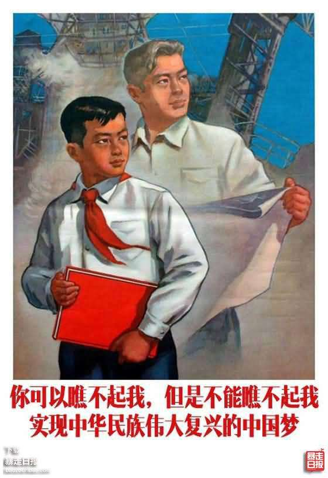
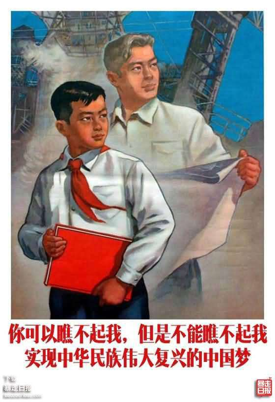
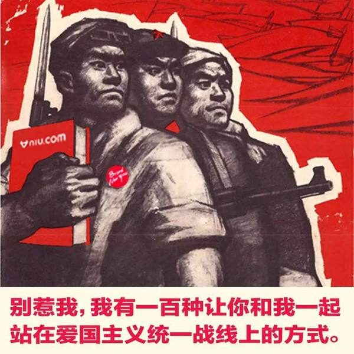
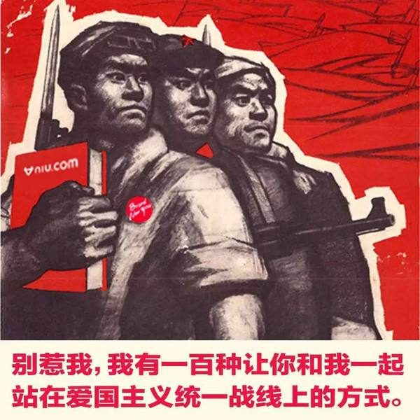
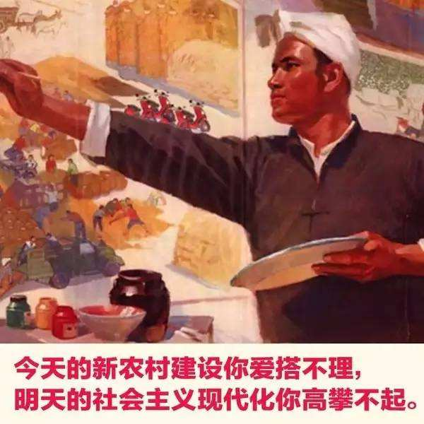
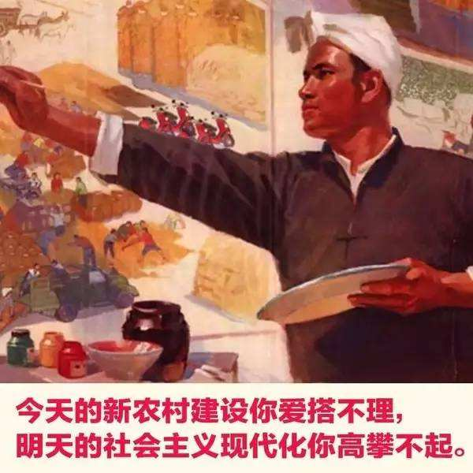
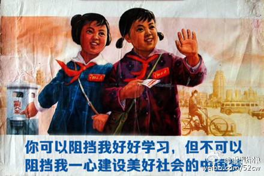

fanhan-inside
前情提要：
缘起很简单，又看见屎绿配色宣传阵地当中炒作「物理」有利于培训「诡辩唯物主义者」了，最晚从2016年美国大选前夕舆论战开始，繁荣的简体中文互联网上就涌现出大批键盘物理学家，奇怪的是看其表现及其引述的经典，各个都没上过大专院校，动辄以「毛主席的小学生」为头衔，炒作「中学政治课本就够了」，我所印象深刻的知名账号大多聚集在之江临安「原创文学论坛」，以{｛砍水手海盗王｝和｛革命导师｝为典型，已经在《设定集》作品相关当中提到了。
当时就是看见傻哔兼逗哔叫嚣「意识也是一种特殊的物质」就反问「难道毕达哥拉斯定理也是物质」，然后提出可重复可证伪可见非常之科学的严肃的思想实验「薛定谔爹（Schrödinger's Daddy）」佯谬。当时还有其它愿意就事论事进行学术探讨的网友，于是跟他们说，（西方哲学）业内普遍认为列宁主义、大救星思想是异端，不仅「西方马克思主义」共识如此，境内从业者也如此。
而（中国古典哲学）业内普遍认为大救星思想有很深的心学渊源，「人定胜天」「战天斗地的革命精神」「与天斗争其乐无穷，与地斗争其乐无穷，与人斗争其乐无穷」都是明显的证据，年谱和学案之类史料也能证实，后来「人有多大胆，地有多大产」之类口号全国炒作，不能说大救星一丁点责任都没有都推到「上有政策下有对策」当中。
当时还有件往事，在《知乎问答№063》当中追记过了，有段话发一次被删一次：
『你们毛左说当年大救星活着的时候，亲口传达的最高指示到处都是，亲切接见一拨又一拨革命小将，就这还能被「奸臣」利用，上有政策下有对策，歪嘴和尚念错经，轰轰烈烈的「不断革命」才造成这么大祸害，并不是「他老人家」的本意……那么现在大救星在广场上躺了三十多年了，再来一次，是谁的本意呢？』
于是这帮诡辩唯物主义者满口污言秽语，与城乡结合部吉普赛大篷车社区的哥布林马车夫的区别就在于没有自称认识「和硕亲王陈家洛」与「妖艳贱货李师师」而已，其它做派一模一样。并且它们还有一种奇怪的自信，能顺着网线爬过来抡起武德充沛侠义无双一力降十会狼牙棒敲碎我的天灵盖，估计「“海里有人”“海边有人”“手眼通中央军委/政法委”」的人脉充沛成都也差不多。
所以后来转战知乎正面宣传自己的学术观点，开宗明义的重复了「薛定谔爹」佯谬，并强调唯心主义与唯物主义的根本区别。由于所有「唯物主义」观点也都是活人传达的，因此归根结底「人的因素是第一位的」，具体说就是「能被一份文件证实的结论，就能被下一份文件证伪」「能被一件考古发现证实的历史真相，就能被下一份考古发现证伪」，并且按照「墨菲定律」，但凡有可能被证伪的，一定会有「人」炮制伪证负责证伪。
到现在了，我自己亲身经历就好几次了，那几拨上门约谈的人民警察各不相同，估计人事关系都分属不同暴力机构，虽然都借用古拉格派出所房间办公吧，但是其中多少是身着戏服的演员谁也不知道，反正「别问，上面打招呼了」没人管。而「工资卡」也先上缴老婆供其养小白脸生野种然后依法离婚撵我净身出户，再赞助女朋友出国留学等回来之后分手，到现在正在分配下一个雌权主义者，估计是人老珠黄浑身花柳病的肉便器诚征接盘侠走通了妇联人脉可以随意篡改档案那种……
……虽然我的户口本一直就在屋里压抽屉底，虽然有关部门尤其是银行放话必须本人到场瘫痪老人也得抬上三楼，但是家贼就是可以拿着我的身份证干这干那还用我的名字在外面借了好多钱（人民警察说的，权威机构认证的结论），唯物主义在哪里？
所以再看见一帮「小学生」不仅历史政治更是没学到初一，就连炒作的物理都没学到初一，成天炫耀「专政铁拳」这个那个的时候，要好好想想，是不是如同它们热衷的「美剧」所描述的那样，警察这种职业已经「外包」给保安公司了，或者是晋绥陕甘宁毒贩，或者是湖南黑帮的新疆恐怖主义打手，或者是北京特产血脖子红卫兵哲合忍耶，各个都把红皮书当绿皮书那么念。
于是回复「可以，这很清真」就行了，估计有硅基人工智障与碳基人肉智能双重审核，还发不出来。
fanhan-inside
刚才在亚马逊中国继续「薅光头羊毛」，先挑「免费公版书」当中的异族语，刷了两千五百多条，又有200封订单的邮件通知。
从下午三点一直薅到晚七点一刻，然后喘口气，上网乱转发现屎黄舆论提及「维生素B、C与A、D、Eの区别と想怎么吃就怎么吃」相关营养学理论。立刻就想起2010年4月8日「可谁知道第二天早晨起来洗完了脸，疯狂不见了，恐惧出现了 」莫名其妙的面瘫往事。
常识我还是有的，当时按照医疗本上登记的社区医院去挂号「神经内科」，挂号处先说楼道「左转」，然后纠正为「右转」。我往里走左右一看，左边是「内科」，右边是「中医科」，当然先去内科。然后大夫一看我这情况，问我是不是看广告来的，我不知道啥「广告」，直说不是，医疗本上登记的就有这家。然后大夫叹口气，开了一瓶复合维生素B，让我赶紧去医疗本上登记的较大规模医院挂真正的「神经内科」号。
回家上网一搜，百度上面铺天盖地的「莆田祖传老巫医根治面瘫」，首页今日头条位置醒目应景推荐的就是刚去的哪家，原来挂号处已经接到莆田系通知「最近北京会有流行性感冒面瘫，患者挂号的时候要说中医科就是神经内科，记住了」，后面的事情想必读者们根据些许社会经历和社会新闻都能猜出来。
然后去了专攻神经内科的天坛医院，就开了注射维生素B1和B12的针剂若干，口服维生素B1和B12药片若干，医嘱「好了以后再买点复合维生素B接着吃一阵，维生素C也可以一起吃，放心吧就算吃多了也不过尿黄窜稀而已」，然后打发回去了。因为「面瘫」可以自愈，啥药也不吃也能好，等个把月就行。于是当时买的复合维生素B吃了不少之后，到十二年后的现在还剩十瓶，维生素C还剩两瓶。
这是刚才应景整理桌上落满了灰尘甚至尘絮的装满药品的塑料袋的时候翻出来的，顺便把其它药盒擦干净，换个干净塑料袋重新装上。仔细观察发现，除了一盒治疗高血压的药品是家贼拿过来的还顺带一个血压计破门而入给我量血压好多次了之外，其它都是治疗头疼的药品：扑热息痛、阿司匹林、布洛芬、安乃近……还有两盒复方中药。都是去药店买的非处方药，一般不说商品名，直说买扑热息痛，没有就买阿司匹林，也没有就买布洛芬。
若是还没有，那就直说自己头疼，这时店员会推荐其它「替代疗法」。其中「复方北豆根氨酚那敏片」好歹把添加剂成分写在药名上了，说没有西药只有这个，也就认了。而「复方羊角片」是在我直说买扑热息痛的时候店员拿给我的，比西药还贵，直说西药没有了，「上面」现在摊派的就是这个，「复方」当中就是有扑热息痛，没辙，买了。
这些经历已经化用进《设定集》，其中之十二〈此心安处便是吾乡〉开门见山就提到：
「油盐酱醋加扑热息痛，温水冲服可治头疼」
「油盐酱醋可以省略，温水也可以改为冷水，唯独不知道是啥东西的扑热息痛不能省略」
但我要说的主要内容不是这些，而是面瘫时期的一些经历，乃至随后与之有紧密联系的一连串事情。
fanhan-inside
关于原公司趁我病要我命的事情不提了，那时候家贼还在生活中骚扰我，包括但不限于明知我周五加班到后半夜，周六大清早过来把被子一掀「起来吧！科学家说睡太多了不好」，我耐着性子强调「今天凌晨才睡下」，结果家贼周日大清早又过来把被子一掀「起来吧！科学家说睡太多了不好」，我一生气家贼就一脸坏笑「爹老了记性不好了你别跟我急」。然后原公司「领导」叫嚣「不要把生活中的情绪带到工作当中来」，双方配合默契。
只不过与原公司「南棒文记Unity邪教」配合默契的不仅仅是家贼，还有市面上江湖好汉草莽豪杰地痞流氓泼皮无赖。
面瘫当时还在坚持上班，早上歪着脸坐地铁，中午歪着脸出门吃饭。原公司所在地址海淀黄庄的马路对面有一家陕西馆子，确切的说是西安馆子。因为最近色目情报掮客在屎绿和屎黄两个宣传阵地讨论「关陇美食」的时候，都强调什么什么菜「虽然是同种风格，但就是这儿有而哪儿没有」，其中提到了「羊肉泡馍」只有西安流行并且口味「尚可」。
简单说，天热的时候不想走太远或者出门太长时间，通常在楼下7-11买盒饭上楼吃，每次买两盒才能吃饱。而四月中旬还不算热，周边就那么几家馆子，每次轮到某馆子都换着样吃。有一天中午在西安馆子，我点了凉皮一份，羊肉泡馍一碗，肉夹馍一个。前两者开票进后厨，而肉夹馍的厨台则摆在门口。我都吃完别的了，看师傅都消停了，肉夹馍还没上，就问老板咋回事。
老板赶紧招呼厨子剁肉，问我是不是那个「经理」的问题。我说你们店里的人事关系我哪儿知道，我嘴上点餐看着谁开票，后来流程我又不清楚。然后环顾四周，那个「经理（♂）」留个小平头双手抱胸正在看着我冷笑，看店老板视线挪过去了，赶紧收敛笑容把头转开。
后来隔几天又去了几次，晚上也有，点了酸汤水饺、biangbiang面以及肉夹馍，但没看见那个「经理」再出现。
然后就是2011年，某公司在牛街，马路对面再过个街区，还是有家陕西确切的说是西安的馆子。有一天中午由于加班缘故，大约一点左右才有空闲，当时我与项目部经理一起去，也是其它加上肉夹馍，还是我的那份肉夹馍没给上。老板就问我「你点的是什么」没有追问是谁的责任。
再往后在家歇着，周边馆子各个都给我脸色看过，在2016年的龙空曾经发言，把这些经历备份过。本来正常的服务业关系，店员态度也合理，忽然第二天开始板着脸冷言冷语，肯定是有人打招呼了呗。
比方说在小区超市旁边某馆子门口出租档位有一家美式炸鸡，之前每次我先掏钱，说好现炸的鸡柳鸡肉块送到馆子里面去。以前每次都挺顺利，忽然有一次都快吃完了还没送，出去一看，染了发的精神小伙坐那儿歇着呢。我问我的东西呢，小伙忍不住笑容一拍手「哎呀忘了」摆明了耍我。我直说了「你们企业文化是收钱不办事么」，这才收敛笑容「没那回事」然后赶紧炸。
其它馆子都一样，周边所有「餐饮业」从业者都认识我，还有中午去没事儿晚上去就被晾着的。回忆中午经历，我吃完就有别人进去，拉着店员指着我的背影不知说啥。肯定是让谁「记住」我呗，特意叮嘱「别给丫好脸色看」什么的。
再强调一遍，周边所有馆子，不仅小区附近，哪怕十分钟脚程走过几条马路，包括2016年夏天仨逗哔嗑多了药挑衅「有的人呢就是没有自知之明」那条，到了直通南三环的主路上，那些馆子对我的态度也有一百八十度转变。我去哪里，哪里就给我脸色看，没有任何例外。去实体店吃点东西「处处碰壁」是砥砺奋进十年来的直观感受。
所以？餐饮业景气的时候，把持这块铁杆庄稼地的红色基因或者直说是黑色基因，宣布我是「不受欢迎的人」，到了全球遭瘟实体经济尤其餐饮业不景气甚至直接禁止堂食乃至关停并转的时候，色目情报掮客哗哗发美食内容，炒作什么国家和地区的什么菜系的什么特色，写得文采飞扬色香味俱全，偶尔还有几句抒情「你妈喊你回家吃饭」……我看了有啥感想？
没有任何感想，看看而已，顶多为《设定集》《异闻录》搜集素材。实际上《异闻录》第一辑正文已经用上不少了，市面上言过其实的广告要打个骨折再腰斩之后找到关键字，自己查询各种资料尤其是权威百科全书/词典与下载的各种实体书反复确认过之后才敢用。典型应用是之十四〈食不厌精脍不厌细〉，同样是使用了大量的素材，结果却是一小段。（再强调一遍，倚仗红色基因或曰黑色基因撑腰于是胡说八道瞎编乱造还能复制并成功从而一字百元年入四千万的钦定文豪不要厚着脸皮与我相提并论）
顺便喷继承和发展了家贼岗位职责的雌权主义者，比起家贼破门而入还需要从值班室的监视器旁边站起来出门走几步路过来，楼上人渣纯傻哔则可以实时砸凳子跺脚毫秒级反应。家贼已经烦不胜烦了，楼上人渣纯傻哔呢？除了骚扰之外没有任何展现存在感的手段，唯一的作用就是拆台扯后腿，给其它赛道的竞争选手创造机会。这素质要是不盯着我，盯着大国工程负责人哪怕建筑工地总工，关键时刻搞破坏，少说也能死几百号人毁几台关键设备搞砸几项计划吧？军功章的一半就这么浪费在每天盯着我随时砸凳子跺脚之上了，她自己觉得亏不亏？
至于市面上炒作「傲娇」了「作」了「女孩子总是要矜持一点嘛」……我怎么就没看出来呢？或者这么说，家贼表演「一路小跑追公交车」推销「五十块钱包月的破鞋」硬扯着我去吃「褡裢火烧」还反复让我看「原公司工资单」全是打哑谜，不肯说实话，可见目标「藏头露尾形迹可疑鬼鬼祟祟」，肯定见不得光嘛，估计跟家贼一样，保护伞没了就是老鼠过街人人喊打的角色。
其它爆料显示早就「人尽可夫」「被玩到烂浑身花柳病正在找接盘侠呢」，咋可能「羞涩」呢？
另外一种说法是「皇帝的女儿不愁嫁」所以有恃无恐：
就是说，甭管怎么「作」，总有为了削尖脑袋往上钻的舔狗前仆后继，所以才会肆无忌惮。
即便雌权主义者「妲己转世灵童」造孽千万罄竹难书铁证如山，多频道网络媒体当中充沛的色目情报掮客除了倒打一耙贼喊捉贼颠倒黑白混淆是非之外，就是大肆炒作划时代二次元大作将其洗地为「傲娇」，即便法庭判了斩立决，只要被告按照「原著」展现千娇百媚作无辜状，就会出现「有良心的青年刽子手」见义勇为私纵死刑犯的神转折骚操作。
即便是「正义不会缺席只会迟到」，按照「原著」剧情也需要「毫无人性」的执行者出场，但是涉及伦理及法哲学问题现实中不太可能。
于是现实中通常的表现，是正义一直等到雌权主义艳星老得不像话了，摄像头后的观众朋友见状硬不起来了「人性」没有的干活了，这才能出场叫嚣「有法可依有法必依执法必严违法必究」做伟大光荣正确状，但仍然会遭遇被高科技变声器炮制萝莉音所迷惑的窃听器后的听众朋友横加阻挠。
可以思考一个尖锐的问题：若是肯尼迪活到现在，看见「从猫咪到妈咪」的佩洛西撒娇买嗲还会「旧情难忘」么？
问题就在于，一旦改朝换代，或者和谐点说「（关陇集团）换届」，已经「作」了不知多少年的骚扰目标到浑身充沛着刻骨铭心的深仇大恨了发宏愿报仇「虽百世可也」不惜搭上后面一百辈子四千余年也要报复回来，那么今生今世还可能有任何好结果么？
甭管权威机构怎么炮制伪证，包括但不限于《夫妻关系证明书》，都不可能改变任何已经形成的唯心主义仇恨——雌权主义人渣纯傻哔根本不敢露面，连「相看两厌」都难以形容这种仇恨——任何狗屁剧本当中的俗套调动情绪桥段，都没有任何操作空间。最好的结果是（在强力部门的保驾护航之下）一拍两散从此老死不相往来，普通结果就是同归于尽——连同江山社稷一起。
哪怕看多了武侠小说的脑壳里只有红白两色液体的肌肉棒子都知道「姑苏慕容」是鲜卑人，成天惦记着复国。那么它们知道「大同拓跋」也是鲜卑人么？同理可证「扬州宇文」也是鲜卑人，并且已经复国成功了呢。
而「弘农普六茹」反而是正经的「汉」人，因为汉族这个概念就是汉朝定义的。
前情提要；
杨广：「好头颈，谁当斫之」
宇文化及：「この首、貰い受けようぞ」
道理很简单，「关陇集团」该换届的时候，杨广「棍子不交，账本不交，什么都不交」，还耍赖。那么武德充沛侠义无双一力降十会咋地吧の內亚外宾不惯着你丫这毛病。
皇帝脑壳被截下了，皇帝的大孝女兼大作女就该愁嫁了。
fanhan-inside
补充楼上人渣纯傻哔政治投机墙头草随风倒的动向。
简单说，刚才从下午两点到四点四十，主要收拾阳台。大批鞋盒空箱子都各安其位各尽其责，主要待在书柜顶上。而原来书柜顶上还有一堆实体书一直再吃灰，阳台上也有书柜，两边靠墙各一个。然后就把书搬下来擦擦呗。其中有那么几本已经掉下来混进一堆盒子箱子当中扭曲了不知多少年，都是「中国结」相关——不为什么，因为当时往书柜顶上扔的时候，这个主题的若干本是最后放上去位于堆栈顶上，出栈也得先轮到它们。
然后搬进室内放在滚轮架子顶上，使劲按住还不管用——会反弹——于是压上一套丛书，若干本外面还加装硬纸壳作「匚」状那种，足够沉重。而这套丛书唤作「中国传统文化图鉴」全八册——我（粗话），楼上乐得合不拢※了。
问题在于，之前在日志中提到社区拥军超市门口哥布林一边痛饮「普通燕京」啤酒一边看着我冷笑的时候，楼上也是乐得合不拢※吖。虽然后来哥布林不喝普京改抽烟了——但盯着我冷笑还是没变——乌克兰也开打了吖。于是「弗拉基米尔大统领」与「弗拉基米尔大大盖特曼」不可混淆。
这意思就是说，最近一段时间内，楼上人渣纯傻哔是向着罗刹站队，优先级比支持我中华兲嘲上国更高——更早一段时间是支持特大日本帝国——直到最近的最近，才开始以腆着脸自称「中国人」。
这人渣纯傻哔自己到处跳槽那是丫自己的事，凭特么什么把自己墙头草的投机分子丑恶嘴脸纸黑锅脏水让别人顶缸？看丫那表现，好像我裹挟甚至绑架了丫挺的叛变了去投奔八国联军一般。
趁现在楼上人渣纯傻哔还来得及表态，也让全党全军全国各族人民看个清楚：到底站中国还是站鹅国？
fanhan-inside
最新动向：“武装保卫苏联！”——绿皮鹅孝子李立三转世灵童
简单说，甭管汉语流利的回纥族（包括但不限于当代权威机构认证的回族、畏吾儿族）同胞如何掰开了揉碎了向尼堪费拉卡菲勒讲解《红色帝国的兴亡》，也只能「诱供」持中华人民共和国/中华民国户口本身份证乃至护照的公民在「鹅螺狮苏维埃社会主义共和国」与「乌克兰苏维埃社会主义共和国」之间二选一站队，无论如何也扯不到「苏维埃社会主义共和国联盟」与「中华苏维埃共和国」之间。
换句话说，正如昨天晚上楼上人渣纯傻哔的墙头草挂出十号风球「中国结」那样，已经向着瑞金而不是莫斯科站队了，实际上从前几个月拥军超市门口站岗放哨的哥布林盯着我冷笑的时候不再痛饮「普京」而是抽烟的表现看来，山西大厦直接领导下的「并州反共毒贩军休所」已经放弃了支援莫斯科，正在到处推销大麻之类软毒品筹措革命经费，到处打点关系疏通人脉寻找下家接盘侠当中。
于是，不但以最大的恶意揣测，从内亚渗透我中华兲嘲上国已久的绿皮鹅孝子又会发起新一轮「支援大西部」「建设大三线」炒作活动，还是在三五九旅供销社老毒贩关系户开辟的内亚兵团基本盘根据地的掩护下，到处抓壮丁甚至直接伪造档案篡改户部服务器大数据。最近则是以「西伯利亚缺人种土豆」为口号到处放风带节奏，相关爆料早就有了：
 

 

 



建议读者们紧盯党国高音喇叭当中各种主旋律正能量，尤其是「到祖国最需要的地方去」（解读详见《羌笛何须怨杨柳，春风不度玉门关》一篇），然后回顾往事吧，尤其是实体书《夹边沟纪事》当中记载的三位50年代留美归国科学家，傅作恭、董坚毅，沈大文，为啥就没有钱学森的好运气呢？